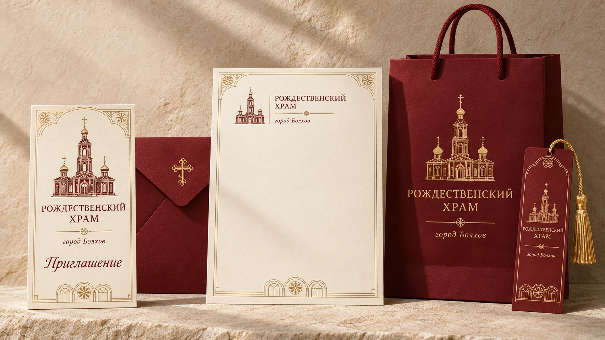
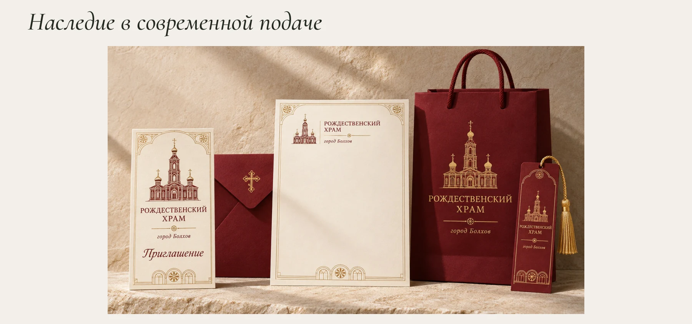

Проект 02 / Айдентика
Развитие концепцииРождественский храм
Развитие концепции айдентики Рождественского храма в городе Болхове.

Идея и визуальный язык
Характер проекта
в каждой детали
В основе визуального языка — архитектура храма, ритм оконных арок и деликатный орнамент. Бордовый и приглушённое золото поддерживают характер печатных материалов.
Что в проекте
- Архитектурный знак и орнамент
- Приглашение, конверт и фирменный бланк
- Визуализации сувенирных носителей
Детали проекта
Нажмите на изображение, чтобы рассмотреть ближе ↗


Есть похожая задача?
Давайте обсудим